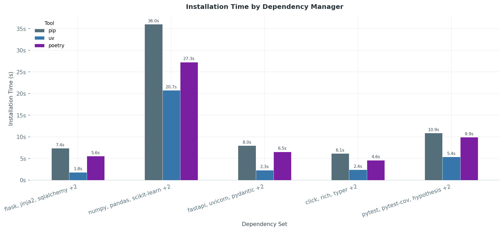
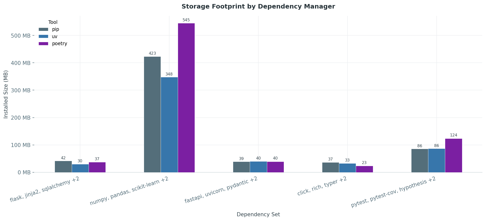

Dependency management with uv¶
Introduction¶
uv is a single self-contained binary written in Rust, developed by Astral — the same team behind the ruff linter. Because it compiles down to native machine code, it carries no Python runtime dependency of its own and starts in milliseconds.
It ships as two statically-linked binaries — uv (main CLI) and uvx (ephemeral tool runner, equivalent to pipx run) — with a total on-disk footprint of ~36 MB. There are no shared libraries, no interpreter bundles, and no background daemons. The global package cache (~/.cache/uv) is shared across all projects to avoid redundant downloads (see more about caching in Section-03).
/usr/local/bin/
├── uv 36 MB ← main CLI binary (statically linked Rust)
└── uvx 343 KB ← tool runner (thin wrapper)
pip install uv
When installed via pip, the wheel format requires a site-packages entry. In addition to the two binaries, pip therefore creates site-packages/uv/ (a Python shim) and site-packages/uv-<version>.dist-info/ (package metadata). The curl installer produces only the two binaries with no Python packaging overhead.
uv in comparison¶
Footprint¶
Python's ecosystem already has well-established answers to dependency management — poetry and pip (+ virtualenv and pyenv) — so let's look at how uv stacks up against them in terms of install footprint, performance, and feature coverage.
The official Poetry installer bootstraps a full Python virtualenv with 15+ transitive dependencies. On python:3.12-slim that single install layer costs 104 MB — more than the base image itself. The biggest offenders: cryptography (15 MB), a bundled pip (13 MB), and rapidfuzz (12 MB). Poetry itself is only 5.9 MB of that total.
The classic alternative — pip + virtualenv + pyenv — comes in at 39 MB, but that number is misleading: it unpacks into 2,889 files across three separate tool trees, with no shared cache, no lockfile, and no unified CLI.
| Tool | Install size |
|---|---|
uv |
~36 MB |
poetry (official installer) |
~104 MB |
pip + virtualenv + pyenv |
~39 MB |
Performance¶
The benchmark ran five representative dependency sets — a web stack (Flask), a data science stack (NumPy/pandas), an API stack (FastAPI), a CLI tooling set, and a dev-tools set (pytest/mypy/ruff) — each installed from scratch inside a python:3.12-slim container.

uv is consistently the fastest across all sets. The gap is most pronounced on the heavy data-science stack: pip takes 34.2 s, pipenv 47.7 s, poetry 28.0 s — uv finishes in 20.8 s. On lighter sets (FastAPI, CLI tools) uv is 2–3× faster than pip alone.

The storage picture tells a similar story. uv's installed layer is consistently smaller than pip and significantly smaller than pipenv. On the data-science stack the difference is most visible: uv installs 347.7 MB vs pip's 423.4 MB and pipenv's 536.2 MB. The savings come from uv's global deduplication cache — packages downloaded once are hard-linked into each environment rather than copied.
Dependency Management¶
uv covers all three roles in a single ~36 MB binary — and adds a lockfile on top.
| Tool | Install size | Lockfile | Interpreter mgmt |
|---|---|---|---|
uv |
~36 MB (two binaries, zero Python deps) | ✓ | ✓ |
poetry (official installer) |
~104 MB (Python venv + 15+ deps) | ✓ | ✗ |
pip + virtualenv + pyenv |
~39 MB (three separate tools) | ✗ | ✓ |
| Tool | Introduced | Lockfile | Env Isolation | Interpreter Mgmt | Full Lifecycle |
|---|---|---|---|---|---|
pip |
2008 | ✗ | ✗ | ✗ | ✗ |
poetry |
2018 | ✓ | ✓ | ✗ | ✓ |
uv |
2024 | ✓ | ✓ | ✓ | ✓ |
Modern Python Project Setuop¶
- explaining the different kind of files
UV workflow¶
uv manages the full project lifecycle through a small set of files and commands.
Key files:
| Filename | Description |
|---|---|
pyproject.toml |
Project metadata and dependency declarations |
uv.lock |
Fully resolved dependency versions and hashes for reproducible installs |
.venv |
Virtual environment created and managed by uv |
Dependencies are declared in the standard [project] table of pyproject.toml:
[project]
name = "myapp"
version = "1.0.0"
requires-python = ">=3.11"
dependencies = [
"requests>=2.28.0",
]
[dependency-groups]
dev = [
"pytest>=7.4.0",
]
uv.lock records every resolved package with its source and hash for fully reproducible installs: